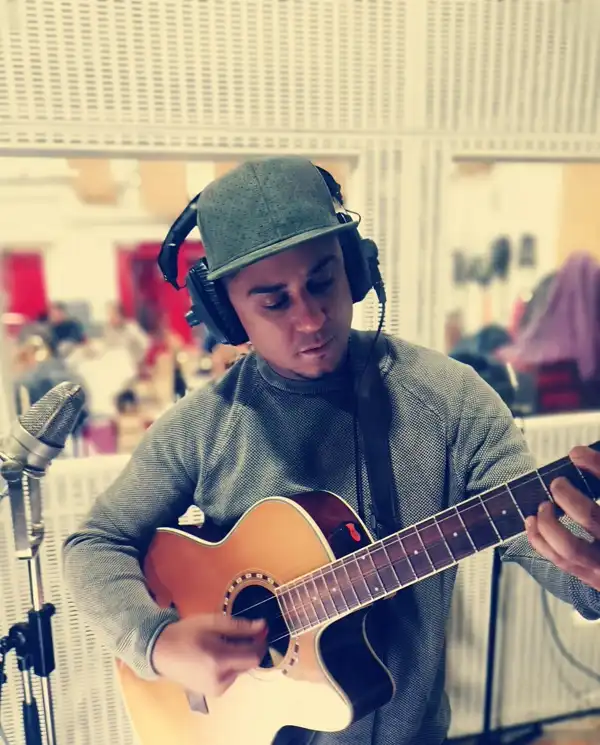

Touring musician, producer, and the gear-obsessed mind behind TopMusicianGear
Músico de gira, productor y la mente obsesionada con el equipo detrás de TopMusicianGear

My name is Daniel Carnago — I'm a touring musician with over 20 years of experience performing on the world's biggest stages. I've played thousands of shows across multiple continents, worked in world-class studios, and spent countless hours behind a mixing console. TopMusicianGear is where I share everything I've learned about the gear that actually matters.
Mi nombre es Daniel Carnago — soy un músico de gira con más de 20 años de experiencia actuando en los escenarios más importantes del mundo. He tocado miles de shows en múltiples continentes, trabajado en estudios de clase mundial y pasado incontables horas detrás de una consola de mezcla. TopMusicianGear es donde comparto todo lo que he aprendido sobre el equipo que realmente importa.
Many of the products reviewed on this site have been personally tested or thoroughly researched. I don't recommend gear I wouldn't use myself on stage or in the studio.
Muchos de los productos reseñados en este sitio han sido probados personalmente o investigados a fondo. No recomiendo equipo que no usaría yo mismo en el escenario o en el estudio.
I started playing guitar at age 12, and by 18 I was playing my first paid gigs. After years of touring, recording, and honing my craft, I began noticing a gap in the market: most gear reviews online are written by people who've never actually used the equipment on a real stage or in a professional session. So I built TopMusicianGear — a resource for musicians who want honest, experience-based advice.
Empecé a tocar la guitarra a los 12 años, y a los 18 ya tocaba mis primeros shows pagados. Después de años de giras, grabaciones y perfeccionando mi oficio, comencé a notar un vacío en el mercado: la mayoría de las reseñas de equipo en línea están escritas por personas que nunca han usado el equipo en un escenario real o en una sesión profesional. Así que creé TopMusicianGear — un recurso para músicos que quieren consejos honestos basados en la experiencia real.
When I'm not reviewing gear, you'll find me on tour, in the studio producing, or on SoundBetter offering session work, production, and mixing services to artists around the world.
Cuando no estoy reseñando equipo, me encontrarás de gira, en el estudio produciendo, o en SoundBetter ofreciendo servicios de sesión, producción y mezcla a artistas de todo el mundo.
As a working musician, I've had the privilege of performing at venues and events including theaters, arenas, and festivals across North America, Europe, and Latin America. My work has been featured on Spotify editorial playlists and I've collaborated with producers and engineers from Grammy-nominated projects.
Como músico activo, he tenido el privilegio de actuar en teatros, arenas y festivales en Norteamérica, Europa y Latinoamérica. Mi trabajo ha sido presentado en listas editoriales de Spotify y he colaborado con productores e ingenieros de proyectos nominados al Grammy.
For gear review inquiries, business opportunities, session work, or questions: danielcarnago@gmail.com
Para consultas de reseñas, oportunidades de negocio, sesiones o preguntas: danielcarnago@gmail.com